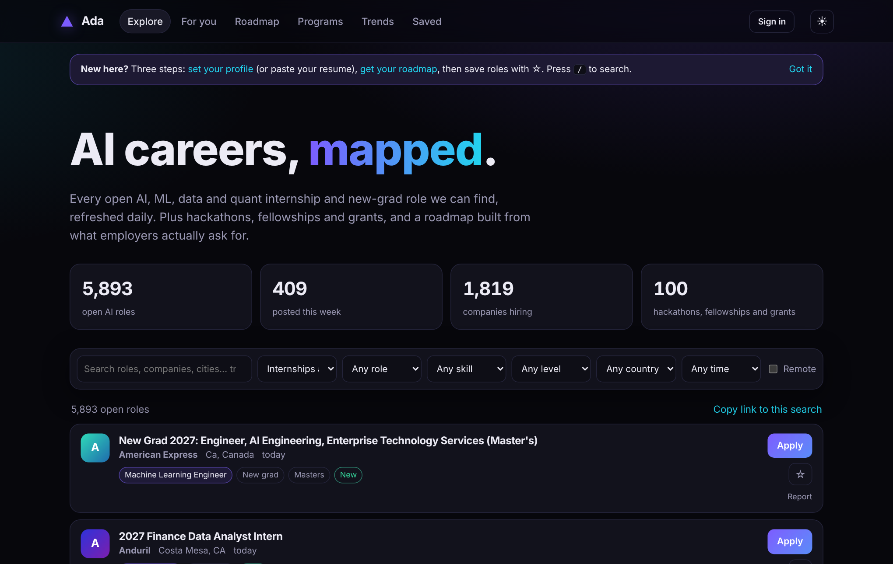

A student who wants an AI internship today does not lack listings; they lack a single trustworthy view of them. Community trackers on GitHub (SimplifyJobs, vanshb03, speedyapply) list thousands of roles each and overlap with one another. Many employers post first on their own Greenhouse, Lever or Ashby boards. Fellowships, hackathons and grants live on hundreds of separate pages whose deadlines are written as prose. General-purpose job platforms aggregate much of this, but their ranking is a black box: a student cannot ask why a role was recommended, or why another was hidden.
Ada takes the opposite design point. Every stage is open source, rule-based where possible, and inspectable by the person it serves. The contributions are:
Ada has no application server. A scheduled GitHub Actions workflow clones the trackers, reads the employer boards through their public JSON APIs, runs the build, and publishes the site and its data files to GitHub Pages. The browser downloads the data once, then filters, ranks and plans locally. A student's profile, saved roles and roadmap progress stay in the browser unless they choose to sign in (§8).
Community trackers. Ada reads the 2027 internship and new-graduate lists maintained by SimplifyJobs and
vanshb03 (machine-readable listings.json) and two speedyapply repositories (AI and software, published
as Markdown tables, which Ada parses). Each tracker has its own category names, date format and location style.
Employer boards. Greenhouse, Lever and Ashby each expose a public, unauthenticated endpoint listing a company's open jobs. Ada keeps a curated list of boards (AI labs, chip and infrastructure companies, robotics and autonomy firms, trading firms) and classifies each posting as internship, new-grad or neither from its title, excluding senior titles. Of 82 boards tried, 15 no longer answered and were removed; 67 are read on every build.
Schema. Every source is mapped to one record: title, company, locations, kind (internship or new-grad), URL, posting time, pay text and source name. Downstream code never sees source-specific fields, so a new source is one parser function plus a test.
| Snapshot | Raw rows | AI-relevant | Unique roles | Companies |
|---|---|---|---|---|
| Offline, trackers only (§4–6 analyses) | 15,042 | 6,442 | 5,897 | 1,819 |
| Production build, trackers + 67 boards | — | — | 6,097 | 1,784 |
The same role routinely appears on several trackers, and sometimes twice in one tracker. A naive key on company + title wrongly merges distinct roles (one company may post "Machine Learning Intern" in three cities). A key on company + title + first location keeps those apart but misses duplicates whose location is written differently ("San Francisco, CA" vs. "SF").
Ada therefore uses two keys. The primary key is company | title | first location, normalised for case and
whitespace. The secondary key replaces the location with the application URL after stripping tracking parameters
(utm_*, gh_src, ref and similar) while keeping meaningful query parameters such as job IDs.
A row merges into an existing role if either key matches. On a merge Ada keeps the earliest posting date and any
pay it has seen.
An earlier version keyed on the URL alone and broke a regression test: distinct roles that share one generic careers-page URL were merged. Including company and title in the secondary key fixed it.
| Measure (offline snapshot) | Value |
|---|---|
| AI-relevant rows before deduplication | 6,442 |
| Unique roles after deduplication | 5,893 (−8.5%) |
| Roles listed by two or more sources | 182 (3.1%) |
| Merges found only by the URL key | 47 |
Is it an AI role? A row is kept if its title matches an AI vocabulary (machine learning, LLM, computer vision, robotics, inference, quant and similar) or if the tracker filed it under an AI, data or quant category and its title is about data or research. The second condition exists because trackers file many plain software roles under "AI/ML/Data". Of 15,042 raw rows, 6,442 pass.
Audit. We drew 60 random titles the filter kept and 60 it dropped (seed 7) and labelled each by hand as in or out of scope (AI, ML, data science and analytics, data engineering, quant). This is a single-annotator audit by the author, so it is a sanity check rather than a benchmark.
| Sample | n | Correct | Errors |
|---|---|---|---|
| Kept by filter (precision) | 60 | 49 (82%) | 11 off-scope, e.g. "Economist", "Reimbursement Analyst Intern", AI product and venture roles |
| Dropped by filter | 60 | 57 (95%) | 3 missed: "MLOps Engineer", "Healthcare Analytics Intern", "Manufacturing Data Analyst" |
The audit found a real bug: "MLOps" has no word boundary before "Ops", so the ml pattern never matched it. Adding
mlops to the vocabulary, with a regression test, recovers 4 roles in the snapshot. The false positives are mostly
tracker-category noise (non-technical roles filed as AI/ML/Data), the clearest target for future work (§10).
Enrichment. Each kept role receives one of ten career tracks (e.g. ML Engineer, LLM & GenAI Engineer, AI Infrastructure & GPU Engineer, Quant Researcher) from ordered title rules; a set of skills that can honestly be read from the title and track; a level (undergraduate, master's, PhD); normalised countries; a remote flag; and an hourly pay figure when the source states one. Pay is stated for only 6.7% of roles, and the United States accounts for 70% of them (Table 4).
| Field | Coverage / distribution |
|---|---|
| Kind | 3,395 internships, 2,498 new-grad |
| Largest tracks | ML Engineer 1,610 · Data Scientist 1,506 · Research Scientist 934 · Quant 422 |
| Country | United States 70% · United Kingdom 7% · Canada 4% · Singapore 3% |
| Remote | 3.4% |
| Pay stated | 6.7% |
A student's profile holds target tracks (in order), known skills, the kind of role wanted, level, countries and whether remote is acceptable. Ada scores each role by adding points, and each point that helps comes with a sentence the student sees:
| Component | Points | Reason shown |
|---|---|---|
| Role's track is the first goal / another goal | +4 / +3 | "Your goal: LLM & GenAI Engineer" |
| Share of the role's core skills the student knows | up to +2 | "You know 2 of 3 core skills" |
| Kind matches / does not match | +1.5 / −3 | — |
| Level matches / PhD role for a non-PhD | +1 / −2 | "Fits Undergrad" |
| In a chosen country, or remote if allowed / neither | +1 / −2 | "In United States", "Remote" |
| Posted within 7 / 30 days; older than 90 | +1 / +0.4; −0.5 | "Posted this week" |
| Pay is stated | +0.2 | — |
The weights are hand-set, not learned; the point of the design is that a student can read the table, disagree with it, and change their profile to see the effect. For a sample profile (goals LLM then ML Engineer; knows Python, PyTorch, statistics; undergraduate internship in the United States, remote acceptable), the top result was an agentic-AI engineering internship at 9.5 points with five stated reasons. Python is excluded from the skill-match ratio because nearly every role asks for it and it would inflate every score equally.
Speed. Over the 5,893-role snapshot in Node.js 22, decoding the data file takes 6.4 ms, ranking every role takes 3.0 ms median (7.2 ms at the 95th percentile, 50 runs), and a free-text search filter takes 0.4 ms, so the interface can re-rank on every keystroke without a server.
Weekly digest. The same function, restricted to roles posted in the last seven days, produces an optional weekly email of the ten best new matches, so the email and the website can never disagree about what "a match" means.
Alongside roles, Ada lists 100 curated fellowships, research programs, hackathons, competitions and grants, grown from 43 to 100
with an outside contributor's reviewed pull request. Deadlines are usually written as prose ("Apply by January 11, 2027";
"Register by January 31; round on February 19"). Ada reads a deadline only when a date follows a closing phrase:
apply/register/submit … by/before, applications due/close, or deadline. A date written without a year
takes the year that puts it closest to the build date. An explicit deadline field always wins.
The narrow pattern is deliberate. An earlier, looser version read "Apply November 1–30" and "apply December 15 … to February 15" as deadlines and produced wrong dates; requiring "by" or "before" removed both errors. The cost is recall: 16 of the 100 programs currently yield a deadline. Programs whose deadline has passed are hidden, and those closing within 21 days carry a "Closes in N days" tag. We prefer a missing deadline to a wrong one, because a wrong date can make a student miss an application.

Data format. The role file is columnar: field names are stored once, and every repeated string (company, location, track, skill) is stored once in a string table and referenced by index. This makes the file 41% smaller than the equivalent array of objects (1.31 MB vs. 2.22 MB, before HTTP compression). A separate 11 KB file holds the newest 40 roles so the page shows real results before the full file arrives, and a service worker serves the app shell from cache on repeat visits and offline. In headless Chromium with a throttled slow-4G profile, the first roles appeared after 1.7 s, down from 11.3 s before these changes.
Privacy. Ada works fully without an account: the profile, saved roles, roadmap progress and an optional pasted resume stay in the browser, and a profile can be shared as a URL fragment that never reaches a server. Optional sign-in syncs that state across devices through Supabase; a row-level-security policy lets each signed-in user read and write only their own row, so the public client key is safe to publish. The weekly email is opt-in, and each digest carries a random 36-character token for one-click unsubscribe through a database function that does not require signing in.
Operations. The whole build runs in about half a second of CPU time on the offline snapshot (0.2 s to read sources, 0.3 s to build) plus network time to fetch sources. A weekly link checker opens an issue when program links break, and 16 Python and 10 JavaScript tests run on every push.
Community trackers [1–3] are the backbone of student job search in computing and are what Ada builds on; Ada's contribution is to unify, deduplicate and enrich them rather than to replace them. Employer applicant-tracking systems [4–6] publish structured public feeds that most student tools do not read. Commercial platforms aggregate far more data than Ada, but their ranking is proprietary; Ada trades scale and learned relevance for a ranking a student can audit. Our explainable scoring is closer in spirit to transparent, rule-based recommenders than to learned ranking.
Ada shows that a useful, explainable search tool for early-career AI roles can run on free infrastructure with no server: a daily build that unifies trackers and employer boards, rules that a student can read, and a ranking that explains every point. The code, data and tests are open at github.com/parveen06naresh/ada.